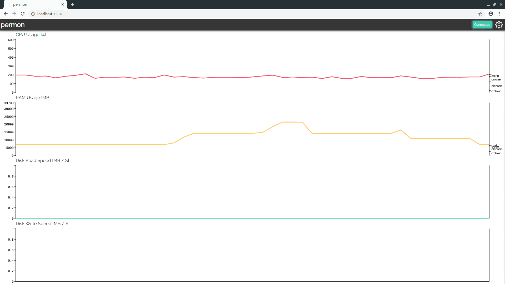
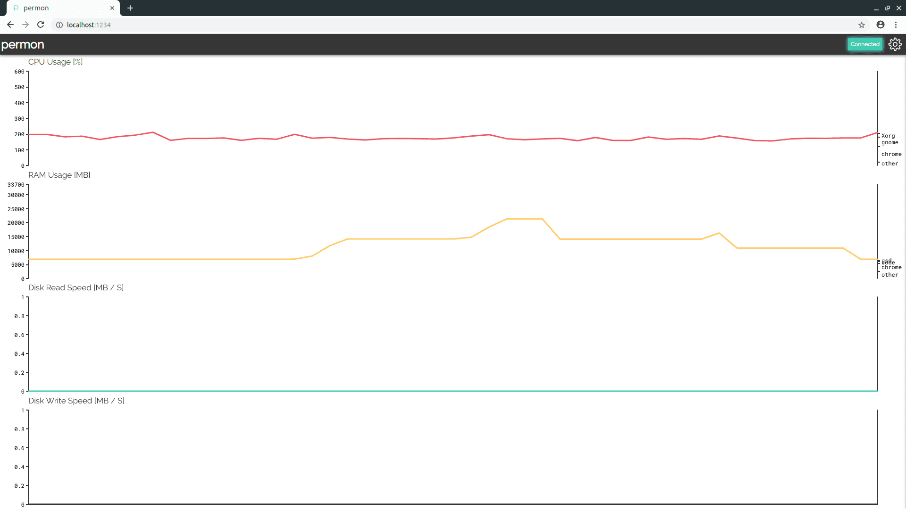

What is permon?
Permon is a tool to display live line charts in a clear, uncluttered way. Permon comes prepackaged
with a lot of useful stats for monitoring the performance of your PC. It is developed with a focus
on only showing you things you care about, not everything you can monitor in your system.
Permon is developed in Python 3. There is a good chance you already have Python on your system. If
not, install it (recommended: Miniconda). Run pip
install permon
in your preferred command line and permon --help to see what you can do with permon.
Permon works everywhere
Permon is designed to work everywhere. It supports Windows, Linux and Mac OS.
But what if you don't have access to a desktop manager? Or want to check performance of your
workstation remotely? Permon has you covered.
You can choose from three frontends. A terminal frontend, native
frontend and browser frontend.
 

Permon is extensible
Permon can easily be enhanced by adding custom stats. And Permon has, in my biased opinion, done a very good job of making this as intuitive as possible. See the code snippet below to see what a custom stat looks like. Custom stats can be added by putting the code in your config directory — see the documentation for details.
import math
from permon.backend import Stat
class SineStat(Stat):
base_tag = 'sine'
name = 'Sine'
def __init__(self, fps):
self.t = 0
super(SineStat, self).__init__(fps)
def get_stat(self):
self.t += 1 / self.fps
return math.sin(self.t)
@property
def minimum(self):
return -1
@property
def maximum(self):
return 1Permon is open source
Permon is open source and published on Github. What makes Permon special is that it has many components like:
- Object orientation in Python
- Drawing in a terminal
- Developing a GUI app in Python
- Making a secure web server, including communication via WebSockets
while still being relatively small (~2k LoC) and thus easy to get into for a beginner — especially because a huge focus has been put on documentation during development.